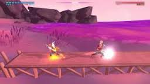
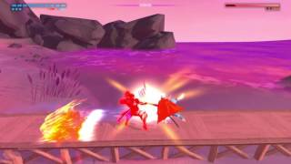

Now this boss has to be my favourite and is unique to boot. It’s also funny to note that the character design is done by Takashi Okazaki, the author and illustrator of the magnga series Afro Samurai, and what does this boss look like? A samurai with an afro in a ponytail. Wether this was intentional or not it’s a nice nod to the artist. Now The Edge is a warrior who, once he came to this world. He trained the entire time in preporation to face you. He is the most poweful and skilled of the guardians but unlike the others it came from training alone. In terms of design he is perfect, altough like The Hand he looks quite generic, he manages to pull it off in a subtle and unique way. Now the gimmick of the fight is repitition. Yes, I am completely serious. This fight is garunteed to be the shortest and the most well done fight you will do. Why? Because the time you finally beat it is when you memorize every single movement and attack the boss has. Even the game will tell you this, The Edge actually says when he knocks you down “Excellence isn’t an art, it’s pure habit. We are what we repeatedly do”.Now the way this fight is unique is that the entire fight is in duel phase, so you are going to need to rely on your dodging to avoid his area attacks. He will perform increadibly fast melee combos along with wave combos. In the next phase he will do something no other boss does, he will fake his melee attacks.This will often cause you to miss parries due to the small delay you have between parries. So pay attention to his movements as he will do this quite often. Once you beat his second phase he will do the most ridiculous thing I have ever seen in a boss fight. He deicides that he wa getting to easy to read so he decides to put his katana away and now uses a BOAT OAR, and the funny thing is that this is the most difficult phases of the fight. Anyways he will then move to a boardwalk where the game switches to a 2-D fighter.
He will also starts launching waves at you and I don’t mean the red hologram waves you see in the melee fights, I mean a litteral ocean wave.
Now due to the camera angle change his attacks are slightly harder to read. In the final phase The Edge will charge up and gain super armor. For those who don’t play video games, super armor is a term used to describe a state where a character no longer flinches from from attacks but will still take damage. He will also gain a new combo where he will perform a lengthy combo ending with a large shockwave. He will also launch numerous waves at you thi requires you to dodge back and forth. My favourite part of this phase is the quickdraw duel. The Edge will run to the end of the screen and start to glow. You will have to unleash a charge attack just as he drops his guard to charge. This will cause you to enter a quick time event nullifying his attack. Once you deplete his health the fight will end.